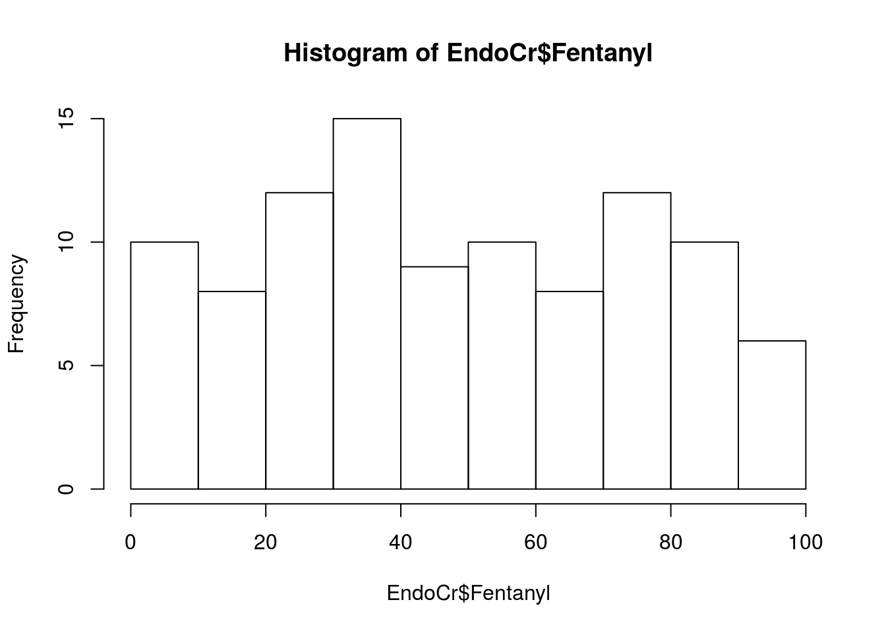
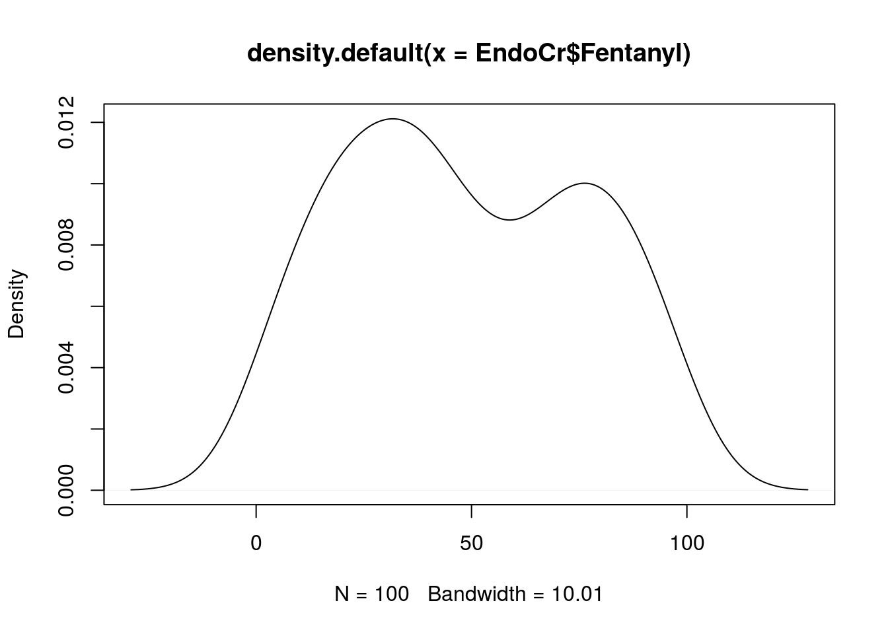
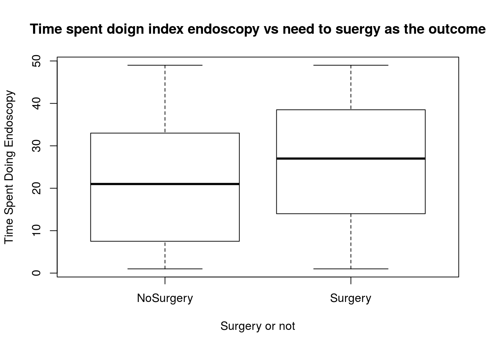

This describes the basic plots for exploratory data analysis. It largely discusses univariate plots such as:
Histograms Density Plots Box And Whisker Plots Barplots
As always the input data is an endoscopic dataset:
Midazolam<-sample(1:10, 100, replace=TRUE)
Fentanyl<-sample(1:100, 100, replace=TRUE)
Age<-sample(1:100, 100, replace=TRUE)
TimeSpentDoingEndoscopy<-sample(1:50, 100, replace=TRUE)
SurgeryorNoSurgery<-sample(c("Surgery","NoSurgery"), 100, replace = TRUE)
EndoCr<-data.frame(Midazolam,Fentanyl,Age,TimeSpentDoingEndoscopy,SurgeryorNoSurgery,stringsAsFactors=F)hist() is the function to use.
#If you want to specify the break sizes you just need to add the 'breaks' parameter:
hist(EndoCr$Fentanyl,breaks=10)
These can also be useful:
plot(density(EndoCr$Fentanyl))
boxplot(TimeSpentDoingEndoscopy ~ SurgeryorNoSurgery , data = EndoCr,
xlab = "Surgery or not", ylab = "Time Spent Doing Endoscopy",
main = "Time spent doign index endoscopy vs need to suergy as the outcome"
)
These are meant as the briefest way to visualise univariate data. There are prettier grpahs using the ggplot package and the layout of graphs can also be very nicely controlled with the lattice package.
More simple plots can be found here: http://www.sthda.com/english/wiki/visualize-correlation-matrix-using-correlogram#visualization-methods
and for simple plots with ggplots (see the relevant page on this site too) look at https://www.rstudio.com/wp-content/uploads/2016/11/ggplot2-cheatsheet-2.1.pdf